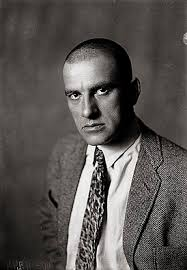

Владимир Маяковский

Стихотворения Маяковского: «Ночь» «Утро» «Из улицы в улицу» «А Вы могли бы?» «А все-таки» «Кофта фата» «Я и Наполеон» «Вам» «Эй!» «Дешёвая распродажа» «Братья писатели» «Революция» «Хорошее отношение к лошадям» «Ода революции» «Потрясающие факты» «Мы идём» «Вам» «Гимн здоровью» «Себе, любимому, посвящает автор эти строки» «О поэтах» «Я счастлив» «Уже второй. Должно быть, ты легла…»
В начале 1930 года поэт много болел. Далее Маяковского ждала череда неудач: его выставка «20 лет работы» не принесла успеха, а премьера пьесы «Клоп» и спектакль «Баня» провалились. Душевное состояние Владимира Владимировича ухудшалось. А 14 апреля 1930 года Маяковский застрелился. В честь великого поэта и драматурга названы многие объекты (например, библиотеки Маяковского, улицы, площади, парки, станции метро, кинотеатры), установлены многочисленные памятники. Театры им. Вл. Маяковского находятся в Москве, Норильске, Душанбе.